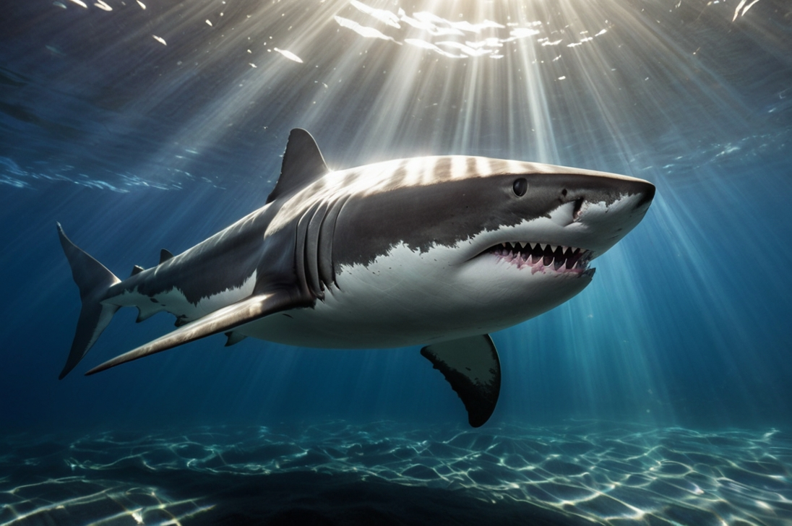

Žralok
„Plavoucí ticho pod hladinou světa“

🦈 „Nebojím se tmy. Jsem její klid.“
- Povaha: Tichý, silný, vyrovnaný
- Bydliště: Modré hlubiny oceánu
- Oblíbená činnost: Plynulé proudění bez cíle
Nehoní se za zvukem, nepotřebuje šum. Žralok je jako stín síly pod hladinou — všichni ho respektují, i když nikomu neublíží. Když plave, oceán se uklidní. Je to strážce rovnováhy, ne predátor. S očima starými jako moře.